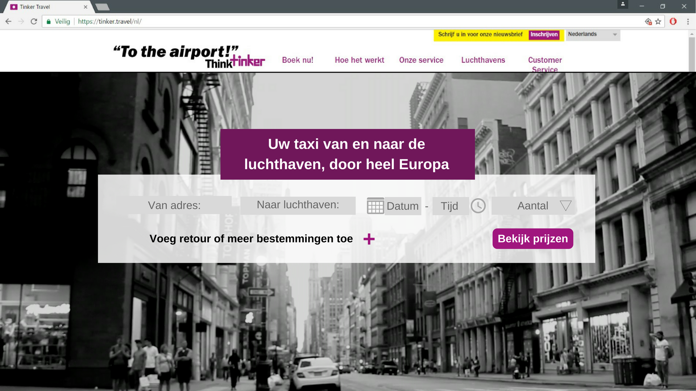

De poster is ontworpen in Indesign. Op de poster zijn onder andere wireframes van het prototype te vinden. Ook worden deze wireframes vergeleken met de huidige website van Tinker Travel. Verder neemt het statistisch onderzoek een belangrijke plek in op de poster.
Eindproject - Presentatie
Dit is de presentatie die gebruikt is om het concept uit te leggen bij Tinker Travel. Tinker Travel gaf aan dat ze erg positief waren over ons concept. Zij gaven aan de progressie balk te willen implementeren na onze presentatie. Ook vonden zij het aanprijzen van de optie Economy + een goed idee.

Het vernieuwde boekingsformulier is uitgewerkt in een klikbaar prototype. Dit prototype is eerst ontworpen met Canva en vervolgens met Invision klikbaar gemaakt. Bij het ontwerpproces hebben de User tests een erg belangrijke rol gespeeld. Aan de hand van deze tests zijn er aanpassingen en toevoegingen gedaan.
Eindproject - Eindverslag
In het eindverslag is het gehele traject van de afgelopen vier weken besproken. In dit verslag is het concept, de besluitvorming en de statistische toest uitgebreid beschreven. Ook zijn user tests, doelgroepanalyse, wireframes, job stories, testscript en preference toets te vinden.